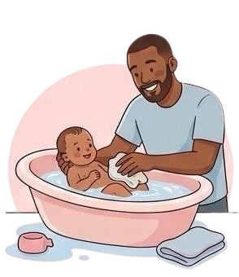
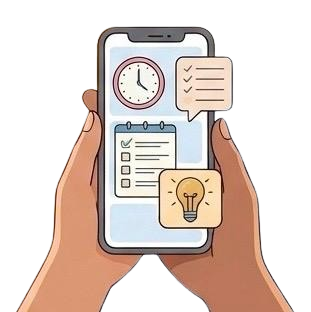

Après accouchement
Prenez soin de vous et de votre bébé.

Soins du bébé

Prendre soin de votre bébé, c’est avant tout apprendre à comprendre ses besoins avec douceur et attention. Le moment du bain peut devenir un véritable rituel de complicité : une eau tiède, des gestes délicats et une ambiance apaisante permettent à votre bébé de se sentir en sécurité. Pour l’alimentation, qu’il s’agisse d’allaitement ou de biberon, l’essentiel est de respecter son rythme naturel et de créer un moment de connexion privilégié. Enfin, le sommeil joue un rôle clé dans son développement : instaurez une routine rassurante avec des repères simples (lumière douce, berceuse, câlin) pour l’aider à s’endormir sereinement et à mieux récupérer.
Récupération maman
Après l’accouchement, votre priorité doit aussi être vous. Votre corps et votre esprit ont besoin de temps pour se reconstruire et retrouver leur équilibre. Accordez-vous des moments de repos dès que possible, même courts, et privilégiez une alimentation riche et hydratante pour recharger votre énergie. Le bien-être émotionnel est tout aussi important : acceptez vos émotions, parlez-en librement et entourez-vous de soutien. Reprendre doucement une activité physique adaptée ou simplement prendre du temps pour vous peut faire toute la différence. Se sentir bien dans son corps et dans sa tête, c’est aussi offrir le meilleur à son bébé.
Conseil pratiques

Le quotidien avec un bébé demande de l’organisation, mais aussi beaucoup de flexibilité. Simplifiez-vous la vie en anticipant les essentiels : préparez à l’avance les tenues, les sacs ou les repas pour éviter le stress inutile. Apprenez à observer votre bébé : ses pleurs, ses gestes et ses habitudes sont de véritables moyens de communication. N’hésitez pas à adapter votre routine en fonction de son rythme plutôt que l’inverse. Enfin, relâchez la pression : tout ne sera pas toujours parfait, et c’est normal. L’essentiel est de créer un environnement serein où vous et votre bébé pouvez évoluer en toute confiance.